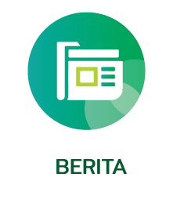
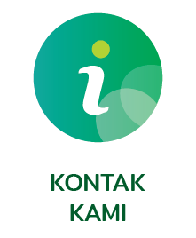
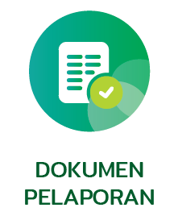
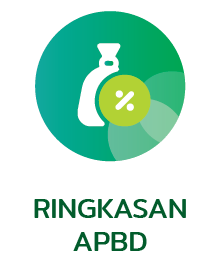

Portal Informasi dan Pelayanan Kecamatan
Selamat Datang di Kecamatan Garum Kabupaten Blitar
Akses informasi layanan publik, berita, pengumuman, PPID, dan dokumen pelaporan melalui halaman lokal.
Akses Layanan Utama
Semoga Anda Puas Dengan Layanan Kami

Berita
Informasi dan kegiatan terbaru.Galeri
Dokumentasi foto kegiatan.
Kontak Kami
Alamat dan kanal komunikasi.Layanan Publik
Informasi pelayanan masyarakat.
Dokumen Pelaporan
Laporan dan dokumen publik.Pengumuman
Pengumuman resmi kecamatan.PPID
Informasi dan dokumentasi publik.
Ringkasan APBD
Ringkasan anggaran daerah.Media Sosial
Kanal media sosial lokal.Informasi Publik
Website Kecamatan Garum menyediakan berbagai informasi resmi yang dapat diakses masyarakat secara mudah, cepat, dan terbuka.
- Berita, pengumuman, dan agenda kegiatan kecamatan.
- Informasi layanan publik untuk masyarakat.
- Akses dokumen, PPID, dan laporan pemerintahan.
Pelayanan Kecamatan
Melalui halaman ini, masyarakat dapat memperoleh informasi pelayanan, kontak kantor, serta dokumen publik Kecamatan Garum dalam satu tempat.